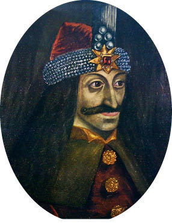

VII: II. MEHMED, ‘FATİH’
1451-1481
Murad’ın en büyük oğlu Mehmed on dört yaşındayken devletin buhranlarıyla başa çıkmak için fazla güçsüz bulunmasaydı, olağanüstü bir ilerleme göstereceği aşikârdır. Yirmi bir yaşındayken, babasının ölümüyle tekrar tahta çıktığında bir otokratın hem en iyi hem de en kötü özelliklerine sahipti ve tek başına devletin idaresini ele alabilecek durumdaydı. Hiç şüphesiz, yalnızca bir asker olarak değil bir devlet adamı olarak da Osmanlı hanesinin o zamana dek sahip olduğu en muktedir insandı. Büyük bir entelektüel kapasiteye ve edebî yetiye sahipti. Beş yabancı dili akıcı bir şekilde konuşabiliyordu. Kendi milletinin en onurlu ve en hırslı insanıydı, aynı zamanda hedeflerine ulaşma konusunda en kararlısıydı. Fakat bu yüce niteliklerini acımasızlık, gaddarlık, kötü düşünceler ve nefsine düşkünlüğüyle birleştirmişti. Mutlak güç arzusu, nâzırlarının kontrolünden bağımsız olma ve insan hayatını kayıtsız bir şekilde hiçe sayması açısından Mehmed seleflerinden farklıdır. O döneme değin, yani Osman’dan II. Murad’a kadar geçen zamana kadar, sultanlar vezirleri ve ordu komutanlarıyla yakın ilişkiler kurmuş, yemeklerini onlarla paylaşmışlardır. Üst veya alt sınıftan bütün kulları için ulaşılabilir birer mevkidedirler. Mehmed ise hepsinden çok farklıydı. Şark geleneğinden sonraki en acımasız kişiydi. İnsanlarla arasına mesafe koyardı. Yemeklerini tek başına yerdi. Bir dert ortağı yoktu. Vezirlerine ve paşalarına sanki onun köleleriymiş gibi davranırdı. Hayatlarına önem vermezdi. Kendi kişisel hizmetinde, palalarının tek bir darbesiyle kelleleri uçuracak yetiye sahip adamları vardı. Mehmed’in en az iki vezir-i azamı kendi gözü önünde daha önceden uyarılmadan ve hiç tereddüt etmeden bu şekilde öldürülmüştür. Görünen o ki, kulları da bu düzene hiç karşı çıkmamıştır.
Güce tekrar sahip olma arzusunda olan Mehmed, babasının ölümünü duyunca Arap atına binerek “Beni seven herkes takip etsin!” diye bağırmış, atını Çanakkale Boğazı’na sürmüş ve oradan Gelibolu’yu geçerek Edirne’ye gitmiştir. Yeni bir sultanın tahta çıkmasının ardından yinelenen ve kötü bir emsal olan Yeniçerilere büyük hediyeler sunma geleneğini gerçekleştirmek zorunda kalmadan Edirne’de tekrar sultan olarak tezahüratlarla karşılanmıştır. Egemenliğinin ilk eylemi erkek kardeşinin, yani Murad’ın Sırp prensesi olan son eşinden olma bebeğinin, ölüm emrinin verilmesi olmuştur. Mehmed yalnızca bir kölenin oğluyken, çocuğun büyüyünce, annesinin sultanın meşru karısı olması bahanesiyle taht kavgası çıkarabileceğinden korkmuştur. Dîvânın yüksek rütbeli bir üyesine çocuğu banyoda boğması emredilmiştir. Bu emir, çocuğun annesinin yeni sultana tebriklerini sunduğu sırada yerine getirilmiştir. Bu çirkin eylem kötü bir izlenim yaratınca Mehmed bu emri inkâr etmenin daha münasip olduğu kararına varmıştır. Bu kararını da emrini yerine getiren dîvân üyesini idam ettirerek göstermiştir. Çocuğun annesini, soyluluğuna rağmen, bir köleyle evlendirmeye zorlamış, bu da hem Sırp prensine hem de babasının hatırasına yapılan korkunç bir hakaret addedilmiştir.
II. Mehmed’in Edirne’de tahta çıkışı
Daha tahta çıktığı ilk zamanlarda, Mehmed’in amacının saltanatını İstanbul’u alarak taçlandırmak olduğu anlaşılmıştır. Bu amaçla, Hunyadi ve Macarlarla üç yıllık bir ateşkes anlaşması imzalanmıştır. Karamanları önce cezalandırmış sonra da uygun şartlar sunmuş ve prenslerinin kızlarını kendine eş olarak kabul etmiştir. Rum imparatorunun Mora yarımadasını yöneten iki kardeşinin İstanbul Rumlarına yardım göndermelerini engellemek adına yarımadaya bir ordu göndermiştir. Boğazlara hâkim olmak için, Boğaziçi’nin Avrupa yakasına, başkente çok yakın bir yere, Bayezid tarafından inşa edilen diğer yakadaki hisarla arasındaki en dar mesafedeki noktaya, büyük bir hisarın inşa edilmesini emretmiştir. Rum imparatoru, buna itiraz etmek için bir elçi gönderdiğinde, Mehmed şu cevabı vermiştir:
Şehrinize karşı bir tehlike oluşturmuyorum. Kendi ülkemin güvenliğini garantileyerek herhangi bir anlaşmayı ihlal etmiyorum. İmparatorunuz, Macarlarla işbirliği yaparak Boğazları babama karşı kapatıp onun Avrupa’ya geçişini engellemeye çabalarken babamın sınırlandırılan hudutlarını unuttunuz mu? Murad, Cenevizlilerin yardımını istemek zorunda kalmıştır. O zamanlar ben Edirne’deydim ve yaşım küçüktü. Müslümanlar telaş içindeydi ve siz Rumlar onları hor gördünüz. Babam, Varna Savaşı’nda Avrupa yakasına bir hisar inşa ettireceğine dair ant içmişti. Bu andı ben yerine getireceğim. Kendi topraklarımda istediğimi yapmama engel olacak hakkınız veya gücünüz var mı? Boğazların iki yakası da benimdir. Anadolu benimdir; çünkü Osmanlılarla doludur, Avrupa benimdir; çünkü Avrupa’yı savunacak gücünüz yoktur. Efendine deki şu an egemen olan sultan hiçbir yönden seleflerine benzememektedir. Benim gücüm onların yeminlerinin ötesindedir. Şimdi geri çekilmene müsaade ediyorum; fakat ileride bana bunun gibi haberleri getirenlerin derilerini diri diri yüzeceğim.18
18 Von Hammer, ii. s. 379.
Rumlar tarafından Mehmed’e başka bir elçi gönderilmemiştir. Soyunun son üyesi olan İmparator Constantine Mehmed’in tahta çıkmasından üç yıl önce erkek kardeşinin yerine geçmiştir. Constantine, imparatorluğun son günlerini aydınlatan cesur ve dürüst bir prensti. Fakat Murad tarafından altı yıl önce tahttan indirilen deneyimsiz bir genç olan Mehmed’in hakkından gelmesi gerektiği düşüncesiyle yeni sultana karşı takındığı tavırla akılsız ve provokatiftir. Mehmed’i, Osmanlı tahtının rakip taliplilerinden biri, Bayezid’in torunu olan ve kendi himayesinde tuttuğu Orhan’ın himayesinin sürdürülmesi için daha fazla ödenek verilmezse salıvermekle tehdit etmiştir. Mehmed kibirli bir şekilde bu talepleri reddetmiştir. Rumların lehine çalıştığından şüphelenilen Veziriazam Halil, Rum imparatorunu bu çılgın davranışlarına karşı uyarmıştır. Rum elçisine, “Deliliğiniz, İstanbul’u sultanın avuçlarına bırakacak. Orhan’ı Avrupa’da sultan ilan edin, Macarları yardıma çağırın, alabildiğiniz vilayetleri geri alın fakat ne yaparsanız yapın Rum İmparatorluğu’nun sonunu kısa zamanda göreceksiniz.” demiştir.
Yeni hisar 1452 yılının sonbaharında tamamlanmış, karşı kıyıdaki hisarla birlikte, Boğazların kontrolünü tamamen Osmanlılara vermiştir. Boğazlardan geçmeye çalışan Venedik gemileri ele geçirilmiş ve mürettebatların gövdeleri ikiye ayrılmıştır. Daha sonra, Mehmed İstanbul’a saldıracağını beyan etmiştir. Paşalarını muhatap alarak, seleflerinin Avrupa ve Asya’da gerçekleştirdikleri fetihleri anlattıktan sonra, daha fazla ilerlemenin önündeki en büyük engelin bu şehir ve imparatorun ordusu olduğuna dikkat çekmiştir.
Mücadele sona erdirilmeli, bu engeller kaldırılmalıdır. Babalarının işlerini tamamlama görevi onlarındır. Şimdi karşılarında yalnızca bir şehir vardır; saldırılarına karşı koyamayacak bir şehir; nüfusu büyük oranda azaltılmış ve eski zenginliği Türk kuşatmalarıyla ve topraklarını Türklerin atalarının bitmek bilmeyen istilalarıyla kaybetmiş bir şehir; binaları işe yaramaz, surları terk edilmiş ve büyük oranda harabeye dönmüş olan yalnızca adı şehir olan bir şehir. Şehrin zayıflığına rağmen, hem karayı hem de denizi kontrol altında tutması ve yerinin elverişli olması, planlarına muhalefet olması ve her zaman saldırıya hazır olması Osmanlıların ilerleyişini büyük ölçüde engellemiş ve hâlâ engelleyebilecek durumdadır. Açıktan veya gizlice Osmanlılara karşı yapabileceği her şeyi yapmıştır. Timurların saldırılarına ve sonrasında ortaya çıkan çilelere sebep olan şehirdir. Hunyadi’yi Tuna Nehri’ni geçmesi konusunda kışkırtmış ve her durumda ve olası her şekilde Osmanlıların en büyük düşmanı olmuştur. Mehmed’e göre, bu şehrin ele geçirilmesinin veya yeryüzünden tamamen silinmesinin zamanı gelmiştir. Ona göre iki seçenek vardır; ya bu şehri kendi imparatorluğuna katacak ya da her şeyini kaybedecek. İstanbul’u himayesi altına alırsa, daha önceden alınmış olan topraklar emniyette olacak ve daha fazla toprak ele geçirilebilecektir; eğer şehri alamazsa sahip oldukları hiçbir toprak parçası emniyette olmayacaktır.19
19 Sir Edwin Pears, Destruction of the Greek Empire, s. 217.
Mehmed, takip eden kış mevsiminde (1452), gelecek yıl yapılacak olan sefer için Edirne’de her türlü hazırlığı yapmıştır. O zamanlar Avrupa ordularında kullanılan topları dökme gibi bir yolu olmayan Mehmed, çok büyük ölçülerde toplarla, 2 ½ feet çapında ve onlarca daha küçük topları ayrıca İstanbul’un duvarlarına 150 Ibs20 ağırlığında mermileri ateşleyecek silahları hazırlaması için bu tarz işlerde deneyimli olan ve Rumların hizmetinde çalışan bir Eflaklının aklını yüksek ücretle çelerek kendi tarafına geçmesini sağlamıştır. Ayrıca şehrin kuşatmasında kullanılmak üzere kayık ve ikili-üçlü kadırgalarla yürütülen savaş gemilerinden oluşan büyük bir donanma hazırlamıştır. Bu büyük amacı için ordu komutanlarıyla gece gündüz planlar yapıp çalışarak hevesini artırmıştır. Ertesi yılın (1453) ilk zamanlarında, Mehmed, İstanbul’un surları önünde, tahminen on iki bin Yeniçeri ve büyük şehrin alınmasına can atan onlarca gayrinizami kuvvet ve sempatizanlar dâhil, yüz elli bin adamdan oluşan bir ordu toplamıştır.
20 1 Ibs (pound) = 0,455 kg (1 kg= 2,2 Ibs) (çev.)
Constantine (Konstantin) de aynı şekilde kendi şehrini savunmak için hazırlıklar yapmıştır. Her türlü teçhizatı toplamıştır. Sahtekâr Rum müteahhitleri tarafından ihmal edilmiş ve üstünkörü tamir edilmiş olan şehrin surlarını tamir etmek ve güçlendirmek için elinden gelenin en iyisini yapmıştır. Ufukta görünen mücadele için Batı Avrupa’nın Hıristiyan prenslerinden yardım istemiştir. Bu yönden ve ayrıca Papa’dan tam destek alma umuduyla, Rum ve Latin Kiliseleri arasında bir birlik oluşturulmasını kabul etmiş; fakat bu birlikle Rumların her şeyi Latin Kiliselerine bağışlanmıştır. Bu birliğin onaylanması için St. Sophia’da büyük bir merasim düzenlenmiştir. Papanın elçisi ve Rum asıllı Kardinal Isidore bu merasime başkanlık etmiştir. İmparator ve tüm dîvânı, papazları ve devlet görevlileri merasime iştirak etmiştir. Bu birlik, Rum papazlarının ana düzenine ve İstanbul halkının büyük bir çoğunluğuna hakaret sayılmıştır. İki kilisenin üyeleri arasında amansız bir nefret vardır ve devletin başındaki büyük tehlike bile farklılıklarını gidermeye yardımcı olamamıştır. Cemaat St. Sophia’yı terk etmiştir. Kilisenin bu merasim tarafından kirletildiği düşünülmüştür.21 Bütün birliklerin başında olan ve imparatordan sonra devletin ikinci asıl adamı sayılan Büyük Dük Notaras ise ayrıca hakarete uğramıştır. Bu durum, onu halkın önünde İstanbul’da kardinal şapkası görmektense Türklerin sarığını görmeyi tercih edeceğini söyleyecek noktaya kadar getirmiştir. Nihayetinde Rumlar iki gruba bölünmüştür. Papazlar, ölüm döşeğinde olan bir kişi eğer kendi gruplarından değilse dinî ayin yapmayı reddetmiştir. Kiliseler, devletin ihtiyaçlarını karşılamak için kendi engin zenginliklerinden yararlanmalarını reddetmiştir. Kendi halkı arasındaki bu bölünme Constantine’i ciddi bir şekilde sıkıntıya düşürmüş ve zayıflatmıştır. Tahminen yüz bin kişi olan şehrin toplam nüfusundan, geçmişle kıyaslandığında ne kadar azalmış olsa da ancak altı bin kadarı Türklere karşı Constantine’i desteklemek için silah kuşanmıştır.
21 Gibbon’un bu iki kilisenin birliğinin tasvirine ayırdığı dört sayfa hiciv ve tahkirin başyapıtıdır. (Gibbon, viii. S. 278-91).
Batı güçlerine yapılan çağrılar, Müslümanlara karşı verdikleri son mücadelede Rumları desteklemek adına Güney Avrupa’dan yetersiz sayıda gönüllünün hizmetlerini sunmasıyla sonuçlanmıştır. Yedi yüz Cenevizli, Constantine’in ana desteği olarak kendini ispatlamış hünerli bir paralı asker olan Giustiniani’nın komutası altında desteğe gelmiştir. Diğerleri ise Papanın isteği üzerine, Kardinal İsidore komutasında ve aynı çevreden alınan küçük bir meblağ para ile gelmiştir. İspanya’dan Katalanlar ve Aragonlar gelmiştir; fakat Batı Avrupa’dan gelen bu askerlerin sayısı üç bini geçmemektedir. Şehri savunmak için Constantine’in emri altında bulunan toplam askerî gücün sayısı sekiz bini aşmamaktadır. Geçmiş yıllarda Türkleri Avrupa’dan defetmek için onlarca Haçlının gönüllü olduğu Fransa ve Almanya ya da Macaristan ile Polonya’dan hiçbir gönüllünün olmaması ise ilginçtir. Doğu Akdeniz ülkelerindeki sayısız Rum’dan da asker ve para konusunda dişe dokunur bir yardımın gelmemesi de aynı derecede ilginçtir. Talihsiz Constantine yalnızca asker sayısı açısından değil para kaynakları açısından da yetersiz durumdadır. Fakat elinde iyi birer tayfası olan yirmi güçlü kadırga ile Venedik’ten gelen üç kadırga daha bulunmaktadır.
Constantine’in kavgasının ne Avrupa’yı çok fazla ilgilendirdiği ne de Rumların kendileri arasında etkili bir destek oluşturduğu görülmüştür.
İstanbul şehri, o zamanlar, Haliç ile Marmara Denizi arasında yerleşik bir durumdadır. Liman girişinden dokuz mil uzaklıkta olan kara sınırının uzunluğu dört mildir. Burası, üç sıra halinde surlarla korunmaktadır, içte bulunan iki sıra sur, aralarında 170 feet mesafe bulunan kulelerle muhafaza edilen muazzam surlardır. Bu surlar arasında 60 feet uzunluğunda boşluk bulunmaktadır. Üçüncü ve dış kısımda bulunan sur ise 60 feet genişliğinde olan ve kale hendeğinin diğer kısmında bulunan mazgallı bir parapet duvardır. Savunmanın bu güçlü hattının planları yaklaşık bin yıl önce İmparator II. Theodosius tarafından gerçekleştirilmiş ve şehri yirmi kuşatmaya karşı korumuştur. Topun icadından önce hakikaten ele geçirilemez bir kaledir bu.22 Ayrıca, Haliç tarafında yaklaşık dokuz mili aşan takviyeler de bulunmaktadır. Sekiz bin asker, Osmanlı ordusu tarafından saldırıya uğrayacak olan surların dört millik kısmının etkili bir şekilde savunulması için bile yetersizken Haliç kıyılarındaki takviyeler hakkında söz söylemek imkânsızdır. Fakat bu kısıtlı koşullarda dahi savunma ateşli bir şekilde sürdürülmüştür. Bu durum, Rum imparatorunun Batı güçleri tarafından yeterince desteklenmiş olması durumunda Mehmed’in belki de şehri ele geçiremeyeceğini göstermiştir.
22 Yazar, 1890 yılında, büyük kuşatmayı anlattığı takdire şayan eserinde bu surları en ince ayrıntısına kadar tasvir eden Sir Edwin Pears eşliğinde surlardan geriye kalanları görme fırsatına sahip olmuştur.
Kuşatma, Mehmed tarafından 6 Nisan 1453 günü başlatılmıştır. Vaktin birçoğu ise topların Edirne’den taşınması için harcanmıştır. Kuşatma sırasında hatırlanmaya değer iki ilginç olay yaşanmıştır. İlki, etrafı kuşatılmış olan şehre Sakız Adası’ndan erzak ve kumanya getiren dört adet güçlü ve sağlam mürettebatlı Ceneviz kadırgasının limanın sıkı ablukasını kırmasıdır. Kendi lehlerine esen şiddetli rüzgârla Marmara Denizi boyunca ve oradan da Boğaz’a yelken açmışlardır. Sultan, kayıklarla itilen küçük gemilerinden yüz kırk tanesini onlara karşı göndermiştir. Bu küçük gemiler azgın dalgalı denize karşı koymada güçlük çekmiştir. Dört büyük Ceneviz gemisi bu küçük gemilerin üstlerine gelmiş, bu gemilere çarpmış ve kayıklarını parçalamıştır. Ceneviz gemilerinin tayfaları, Türk kadırgalarının üzerine kocaman kayalar fırlatmış ve sırrı Rumlarda saklı olan söndürülmesi imkânsız ateşlerle Türkleri geri püskürtmüştür. Türk kayıkları bu büyük gemilerin ezici gücü karşısında herhangi bir ilerleme kaydedememiştir. Kadırgaların büyük bir kısmı ciddi can kayıplarıyla birlikte batmıştır. Liman girişinin yakınında rüzgâr dindiğinde Ceneviz gemileri, sayısız Türk donanması tarafından kuşatıldığı için büyük bir tehlikeye düşmüştür. Fakat son anda, akşam rüzgârı esmeye başlamıştır. Ceneviz gemileri kendilerini kurtarmayı başarmıştır. Limana girişi engelleyen zincirler gevşetilmiş ve kurtulan gemiler içeri alınmıştır.
Zonaro’nun Fırçasından Fatih’in Edirne Kuşatması
Sultan, deniz muharebesini kıyıdan izlemiştir. Atını, denizcilerine daha büyük çabalar harcamalarına yardımcı olma umuduyla sığ denizin içine doğru sürmüştür. Mehmed, yeni donanmasının bu ilk görevinde büyük hayal kırıklığına uğramıştır. Ertesi sabah, doğuştan gürbüz bir Bulgar olan Amiral Balta Oghli’yi huzuruna çağırtmış ve bu başarısızlığından dolayı onu azarlamıştır. Amiral falakaya çekilirken yere yatırılmasını ve dört adet güçlü adamı tarafından sıkıca tutulmasını emretmiştir. Hatta bazı tarihçiler sultanın kendisinin de zavallı amirali asasıyla dövdüğünü belirtmektedir.
Deniz bozgunundan doğan diğer olay ise Mehmed’in, kayıklarla itilen küçük gemilerinin Rumların yok edilmesinde güçlü gemilere karşı koyamadıklarını öğrenmesi üzerine, çok sayıda küçük geminin, suyun sığlığından ötürü, büyük gemilerin küçüklerle çarpışamayacağı ve şehrin iç savunmasına karşı rol oynayacağı, Boğaz’dan limanın üst kısımlarına gönderilmesine karar vermesidir. Bu amaçla, Mehmed, Boğaziçi’nin üstünden, yani Tophane’den Boğaziçi ile Haliç’i birbirinden ayıran tepeye kadar kalaslarla döşenmiş bir yolun inşasının yapılmasını emretmiştir. Bu yol, iyice yağlanmış ve gemiler, ırgatlar ve öküzler tarafından çekilerek yolun üzerinden kaydırılmıştır. Tepenin diğer ucundaki yokuşu geçmek ise kolaydır. Bu plana benzer bir operasyon önceden, daha küçük ölçeklerde, başka bir yerde yapılmış olduğu için tamamen yeni bir plan değildir. Plan, çarpıcı bir başarıyla yürütülmüştür; bir gece içinde seksen adet Türk kadırgası bu yolla üst limana çıkarılmıştır, ayrıca, Mehmed liman boyunca bir yüzer köprü inşa ettirmiş ve bu köprü üzerine toplar dikilmiştir. Bu iki plan, Mehmed’e liman hattı boyunca Rum savunmalarına saldırma imkânı tanımış ve Constantine’i, ana saldırının gerçekleştirildiği kıyıya uzanan surların savunmasından onlarca askeri geri çekmek zorunda bırakmıştır.
Genç sultan, kuşatmada faal bir rol oynamıştır. Surların bombalandığı dört topun hattını kendisi belirlemiştir. İlk büyük top atışı başarısızlıkla sonuçlanmıştır. İlk atışta yanmış ve topu ateşleyen Eflâklıyı parçalara ayırmıştır. Fakat aynı boyutlarda iki topla birlikte tekrar ateşlenmiştir. Şehrin surlarına ve kalelerine toplar23 atılmış ve nihayetinde bir oyuk açılmıştır. Hiç şüphe yok ki, şehrin ele geçirilmesi, geçmişte kalelere karşı kullanılan her şeyden üstün olan bu büyük silahların teminiyle gerçekleşmiştir. Rumlar da savunmada toplar kullanmış; fakat surların siperleri silahların ateşlenmesine izin verecek kadar geniş değildir ve silahların kullanılabileceği yerlerde ise surlar büyük sarsıntılara maruz kalmıştır.
23 Büyük boyutlardaki toplar Türkler tarafından Çanakkale’nin savunmasında son ana kadar kullanılmıştır. 1855 yılında yazar oradaki kaleleri ziyarete gittiğinde hâlâ silahlardan bazılarının mevcut olduğunu görmüştür.
Kuşatmanın yedinci haftasından sonra, top atışları surların üç noktasında oyuklar açılmasını sağlamış, bu da Mehmed’e son hücum için her türlü umudu vermiştir. İlk oyuk, iki ana dış surun neredeyse dört yüz yard24 uzunluğa düşürüldüğü ve muhafız kalelerden dördünün harap edildiği St. Romanus’ta açılmıştır. Geniş hendeğin bir kısmı surun enkazı, diğer kısmı ise çalı çırpıyla doldurulmuştur. Sultan, hücumun Mayıs ayının 29’unda yapılmasına karar vermiştir. Bu karar, şehirdeki Rumlar tarafından da duyulmuş ve her iki taraf da en büyük gayretlerini göstermek için her türlü hazırlığı yapmıştır.
24 Yard (Yarda): İngiliz birimleri, Emperyal birimler ve Birleşik Devletler geleneksel birimleri sistemleri içinde yer alan bir uzunluk ölçüsü birimidir. Uzunluk değeri sistemden sisteme değişebilir. 1 yarda 3 ayak ya da 36 inçtir. Genelde mesafeleri ifade etmek için kullanılır. Alan hesaplarında yarda kare, hacim hesaplamalarında ise yarda küp adını alır. Bugün en büyük sıklıkta kullanılan yarda, uzunluk değeri 0,9144 m’ye eşit olan “uluslararası yarda”dır. ABD, İngiltere ve İngiliz Milletler Topluluğu ülkelerinde kullanılır.
Mayıs’ın 28’inde Mehmed birliklerine şehir ele geçirildiğinde üç günlüğüne şehri onlara bırakacağına dair bir ferman yollamıştır. Fermanda, baki Allah, dört bin peygamberi, kendi nefsi üzerine şehrin tüm nüfusunun, erkek, kadın ve çocuk, onlara bırakılacağına dair ant içmiştir. Bu ferman, birlikler arasında coşkuyla karşılanmıştır.
Aynı gün, sultan, ordusunu her biri elli bin adamdan oluşan üç bölüğe ayırmış ve sonra bütün askeri ve bahriyeli liderlerini çadırına çağırmıştır. Burada, onlara şehre ertesi gün nihai saldırıyı gerçekleştirme niyetini açıklamış, saldırı yöntemlerini belirtmiş ve son emirlerini bildirmiştir. Birliklere şehri yağmalama iznini vereceğine dair sözünün içeriğini genişletmiştir.
Şehirde sonsuz miktar ve çeşitte her türden zenginlik vardır, saray ve evlerdeki hazineler, gümüş, altın ve değerli madenlerle kaplı kiliseler. Ele geçirilip köle olarak satılacak yüksek rütbeli sayısız erkek ile asil ailelerden gelen genç ve güzel kadınlarla, satılabilecek veya haremlere alınabilecek sayısız kadın vardır. İyi ailelerden gelen delikanlılar mevcuttur. Evlerle güzel bahçeler vardır [demiştir].
Bugün size büyük ve kalabalık bir şehir veriyorum, eski Romalıların başkenti olan şehir, görkem ve ihtişamın merkezi olan şehir, dünyanın merkezi olacak şehir. Bu şehri size yağmalamanız için veriyorum, sayısız kadın, erkek ve çocukla dolu olan bu şehri ve şehri donatan her şeyi ele geçirmeniz için veriyorum. Şu andan itibaren hepiniz büyük saadetle yaşayacak ve çocuklarınıza büyük miraslar bırakacaksınız. Bütün Osmanoğullarına en büyük getiri ise dünya çapında akıl almaz bir üne sahip olan bir şehrin fethi olacaktır. Şanı ne kadar büyük olursa, şehri taarruzla ele geçirmenin şerefi de o kadar büyük olacaktır. Her zaman Türklerin düşmanı olmuş, her zaman Türklere düşman gözüyle bakmış, her yoldan Türklerin gücünü yok etmeye çabalamış olan şehir şimdi Türklerin eline geçecektir. Şehrin alınmasıyla bütün Rum İmparatorluğu’nu fethetmenin kapıları Türklere ardına dek açılacaktır.25
25 Mehmed’in tarihçi Christobulus tarafından kaydedilen konuşması, Sir Edwin Pears’tan alıntılanmıştır, s. 323-4.
Mehmed’in bu konuşması kadın, erkek ve çocukların satılmak veya haremlerine almak üzere, dinî bağnazlıktan değil, Müslüman fetihlerinin ana dürtüsü olduğu için yağmalandığı ve ele geçirildiğine dair kanıt olması açısından alıntılanmıştır.
Taarruzun arefesi Türkler arasında büyük bir coşku yaşanmıştır. Çadırlar aydınlatılmıştır. Bu durum, Rumların İmparatorluklarının son gününde tamamen farklıdır. Şehirde, surların savunmasında varlığına gerek duyulmayan insanların bile duaya katılıp Tanrı’ya düşmanın ellerine düşmemeleri için yalvardıkları dinî bir tören düzenlenmiştir. Törenin sonunda İmparator Constantine soylular ve askerî liderlerden oluşan topluluğa seslenmiştir. Yaklaşan taarruza karşı onları uyarmıştır. Constantine:
Dini, ülkesi, egemenliği veya karısı ve çocukları için ölmeye hazır olmak bir vatandaşın görevi sayılmıştır her zaman. Kahramanca bir özveri için gerekli olan tüm bu teşvikler şimdi birleşmiştir. Şehrimiz, bütün Hıristiyanlar için sığınak, her bir Rum’un ve Doğu’da yaşayanların gururu ve neşesi olmuştur. Şehrimiz, Şehirlerin Kraliçesi’dir, mutlu zamanlarda neredeyse bütün topraklara güneşin altında boyun eğdiren şehirdir. Düşman, şehrimize en büyük ödülü olarak göz koymuştur. Savaşa neden olmuştur. Şehri almak için bütün taahhütlerini ihlal etmiştir. Yurttaşlarımızı kendi boyunduruğu altına almak ve köle yapmak, Baba, Oğul ve Kutsal Ruh ile donanmış ve içinde yüce Tanrı’ya tapınıldığı kutsal kiliseleri bizim kutsal varlıklarımıza küfredecek mabetlere çevirmek ve İsa’nın yerine başka bir peygamberi koymak istemektedir. Yurttaş ve silah arkadaşı olarak, kendileri için kıymetli olan şeyleri korumak için cesurca savaşmak, eski Yunan ve Roma kahramanlarının soyundan geldiklerini hatırlamak ve gelecekte kendi hatıralarının da atalarınınkiler kadar güzel olacağını bilmek ve buna göre davranmak vatandaşlarımızın görevidir... Bunu savunmak için ölümü göze almıştır... Düşman askerlerinin sayısına güveniyor; fakat siz Tanrınıza güvenin.
Akşam, St. Sophia’da, bir Türk camisine çevrilmeden önceki son Hıristiyan merasimi olması açısından unutulmaz olan dinî bir merasim yapılmıştır. İmparator ve yandaşları dinî törene ve Rum patriğinin veda davetine iştirak etmiştir. Sonu yaklaşmakta olan bir imparatorluk adına yakılan bir ağıt merasimi olduğu için unutulmaz bir görüntüdür. Daha sonra, imparator sarayını son kez ziyaret etmiş ve hizmetkârlarına veda etmiştir. Burada çok dokunaklı anlar yaşanmıştır. Orada bulunanlardan biri şunları kaleme almıştır: “Taştan yapılma biri bile olsa o an ağlardı.” İmparatorun, ölümcül düşmanın şehri ele geçirmesinden kurtarmak gibi bir umudu olmadığı aşikardır.
Kaçınılmaz olan ertesi günün, 29 Mayıs 1453 sabahı erkenden Türk ordusu nihai taarruza geçmiştir. Sultanın planı hem karadan hem de denizden surların pek çok noktasına saldırmak; fakat asıl taarruzu, St. Romanus kapısının yakınındaki Lycus vadisindeki toplardan büyük hasar görmüş surlara yapmaktır. Daha sonra da alt birlikleri kullanarak büyük ordusunun art arda yapacağı saldırılarla muhafızları bozguna uğratmak ve uzun süren dövüşme sonucunda düşman bitkin düştüğünde son taarruza en iyi birliğini saklamaktır. İlk taarruz, ok ve yay ile kaya ve demirden toplar atan sapanlarla kuşanmış büyük bir gayrinizamî birlik tarafından gerçekleştirilmiştir. Toplarda kullanılan barut henüz tüfekler için kullanılmamaktaydı. Askerler, saldırı için merdivenlerle surlara tırmanmakta ve bir ok kümesi gökyüzünü karartmaktadır. Bu uzun takviye hattını savunmak için en fazla iki bin Rum ayrılabilmiştir. Askerler, iki sur arasında kalan duvarlarda toplanmışlardır. İç surlardaki kapılar kapatılmıştır, böylece buradaki askerlerin savunmayı bırakıp şehre geri çekilmek gibi bir şansları bırakılmamıştır. Bu iki sur arasında kendi canları için savaşmak zorundadırlar.
Sultan, büyük top atışının hendeğin kenarında gerçekleştirilmesini emretmiş ve tek bir atış dış surun yerine dikilen seti yıkmıştır. Toz bulutunun kamuflajıyla Türkler saldırıya geçmiştir. Rumlar da müdafaaya geçmiş ve Türkler büyük kayıplar vererek geri çekilmişlerdir. İkinci taarruz, gayrinizamî orduya göre oldukça üstün olan Anadolu piyadeleri tarafından gerçekleştirilmiştir. Fakat başarılı olamamışlardır. Rumların bu iki saldırıyla bitap düşmüş olacağını düşünen sultan, üçüncü bir taarruz için büyük bir birlik göndermiştir. Bu birlik, sultanın Yeniçerilerinden oluşmaktadır. Yeniçerileri hendeğin kenarına göndermiş ve saldırı emrini vermiştir. Sete karşı tekrar top atışı yapılmış ve top atışının kaldırdığı toz bulutu altında Yeniçeriler taarruzlarını gerçekleştirmiştir. Bazıları seti geçmekte başarılı olmuş ve onlarla Rumlar arasında göğüs göğüse bir mücadele başlamıştır. Rumlar ellerinden geleni yapmıştır. Fakat başlarına bir felaket gelmiştir. Askerleri kumanda eden Giustiniani ağır bir şekilde yaralanmıştır. Yaralarından kanlar boşalmaktadır. Giustiniani savaş alanını terk etmeye ve yaralarına baktırmak için limandaki gemisine dönmeye karar vermiştir. Yakınlarda bulunan İmparator Constantine, onun gidişinin geriye kalan askerler üzerinde yıkıcı etki yaratacağını belirterek kalması için beyhude yakarmıştır. Diğerleri ise yaraların çok da ciddi olmadığını ve komutanın savaş alanını terk etmesinin gereksiz olduğunu düşünmüşlerdir. Fakat Giustiniani gitmekte ısrarcı olmuş ve iç surların kapısının anahtarlarını istemiştir. Onunla birlikte bazı Cenevizli askerler de alanı terk etmiştir. Bu gidiş, birlikler arasında ümitsizlik ve bunalıma yol açmıştır. Türklere karşı dirençleri düşmüştür.
Bazı Rum tarihçiler, Giustiniani’yi savaş alanını kritik bir anda terk ettiğinden dolayı korkaklıkla suçlamaktadır, Gibbon ise bu durumu onun büyük otoritesine bağlamıştır. Fakat İtalyan askerin şanı, Finlay ve Sir Edwin Pears gibi daha sonraki tarihçiler tarafından savunulmuştur. Giustiniani’nin, İstanbul’un ele geçirilmesinden birkaç gün sonra yaralarından dolayı öldüğünü bildirmişlerdir, bu da yaraların ciddi ve ölümcül olduğunun en iyi kanıtıdır. Tüm bunlara karşın, geri çekilmesinin askerlerin üzerindeki etkisini yeterince değerlendirememiştir. Kendi gemisinde ölmektense savaş alanında ölmesi daha iyi olacaktır. Fakat bu olsaydı bile, Giustiniani’nin alanı terk etmesinin günün dönüm noktası olduğu ve müdafaayı gerçekleştiren askerler üzerinde yıkıcı etkisi olduğu konusunda bütün tarihçiler mutabıktır.
Bu durumu düzeltmek için imparator elinden gelenin en iyisini yapmıştır. Giustiniani tarafından terk edilen mevkii kendisi doldurmuş ve savunmayı yönetmiştir. Mehmed ise hendeğin diğer tarafından müdafaanın zayıfladığını gözlemlemiştir. Yeniçerilerine: “Şehri alıyoruz! Orası artık bizimdir! Surlar savunulmuyor!” diye haykırmıştır. Onlardan son çabalarını harcamalarını istemiştir. Yeniçeriler setin üzerine çullanmış ve duvarlardan bir giriş açmışlardır. Kısa bir süre içinde diğer askerler de akın etmiş ve sayıca üstün olmaları dolayısıyla Rumları bastırmışlardır. Bu başarıyla umutları tükenen imparator kaftanını bir kenara fırlatmış ve “Şehir ele geçirildi ve ben hâlâ hayattayım!” diye haykırmıştır. Kılıcını çekerek arbedenin içine girmiştir. Constantin, imparatorluğu ve şehri için savaşarak ölmüştür. Sultanın emriyle aramalar yapılmasına rağmen cesedi hiçbir zaman bulunamamıştır. Türk askerler surlardaki Rum ve İtalyan askerlerden sayıca üstündür. İç sur boyunca Rum ve İtalyanların kaçacağı hiçbir çıkış yolu yoktur. Onlar iki sur arasında kendi tuzaklarına düşmüşlerdir. Hepsi birden orada bozguna uğratılmıştır. Bunu kullanan Yeniçeriler iç surlar boyunca yollarını açmakta hiçbir zorluk çekmemiştir, daha önce de belirtildiği gibi, şehrin bu kısmı korunmasızdır.
Fatih’in İstanbula Girişi
Şehrin diğer kısımlarına yapılan taarruzlar başarılı olmamıştır. Yalnızca bu taarruzda başarılı olunmuştur. Buradaki zaferin bir kısmı Mehmed’in eşsiz komutanlığı ve yılmaz kararlığı, bir kısmı ise müdafaanın en kritik anlarında Giustiniani’nin geri çekilmesiyle Rumların yaşadığı makûs kader sayesinde kazanılmıştır. Şehri savunan Rumlar görevlerini yerine getirmiştir; fakat sayıları oldukça yetersizdir. Batı Avrupa’dan ya da komşu Hıristiyan devletlerinden yeterli desteği alamamışlardır. Birkaç bin askerleri daha olsaydı, şehri kurtarma imkânları olabilirdi. Papa tarafından gönderilen otuz takviye kadırga şehir düştüğünde henüz yoldaydı. Ters yönden esen rüzgâr kadırgaları Scio’da (Sakız Adası) alıkoymuştur. Konuyla ilgili Rum tarihçisinin yorumu ise “Auxilium deus ipse negavit”26 olmuştur.
26 “İnsan her zaman kendi gücünün varlığına inanmalıdır.” (çev.)
Türkler şehre girdiklerinde, yaş veya cinsiyet ayrımı yapmaksızın sokaklarda gördükleri herkesi yağmalamaya başlamıştır. Fakat şehirde silahlı kimse kalmadığı için onlara direnen de yoktur. Tüm nüfus sinmiş ve paniğe kapılmıştır, ayrıca üstlerine doğru gelmekte olan kara talihle karşı karşıyadırlar. Bir süre sonra, Türkler yağmalama ve köle alma konusunda daha pratik bir çözüm bulmuşlardır. Büyük bir grup asker varlıklı kesimin konaklarını, diğer bir grup kiliseleri ve üçüncü grup ise dükkânları ve evleri yağmalaya başlamıştır. Bütün kıymetli eşyalar askerlerin arasında paylaştırılmak üzere bir alanda toplanmıştır. Konak ve evlerde yaşayanlardan yaşlı olanlar öldürülmüş, güçlü ve genç olan kadın ve erkekler ise köle olarak satılmak üzere mahkûm edilerek askerler tarafından alınmış ve iplerle bağlanmıştır.
Bu sahnelerin tadını çıkaran Türk tarihçi Sadeddin şunları söyler:
Yağma iznini alan askerler keyifli bir şekilde şehre akın etmiş, buradaki mal sahipleriyle ailelerini ele geçirmiş ve kâfirlere gözyaşı döktürmüşlerdir. İlkeleri “Yaşlıları öldür, gençleri ele geçir.” olmuştur.27
27 Pears’tan alıntılanmıştır, s. 30.
En ağır felaket ise şehirdeki zengin ve kültürlü sınıfın başına gelmiştir. Kız ve erkek evlatları Anadolu’daki haremlere satılmak üzere veya daha kötü amaçlarla kendilerinden alınmıştır. Ebeveynler de eğer hâlâ güçlü kuvvetlilerse, köle olarak satılmıştır. Birçok kişi evlerinden kaçıp hasımlarının tapınaklara saygı duyacağını umut ederek veya bir çeşit mucizenin onları kurtaracağını bekleyerek St. Sophia’da ve diğer kiliselerde toplanmıştır. Fakat çabalar beyhudedir. St. Sophia, şehirdeki en iyilerin toplandığı bir ağ olmuş ve gruplar halinde üstelerinden gelinmiştir. Kendilerini Tanrı’ya adayan bakireler saçlarından sürüklenmiş ve sahip oldukları her şey ellerinden alınmıştır. Şehirde tarifi imkânsız acılar yaşanmıştır.
Şehir, kıymetli olan her şeyden arındırılmış ve çıplak halktan başka bir şey kalmamıştır. En düşük tahminlere göre, çoğu genç ve kuvvetli kadın ve erkeklerden oluşmak üzere elli bin kişi esir düşmüş ve daha sonra köle olarak satılarak Anadolu’ya sürgün edilmiştir. Çok azı şehirden kaçarak diğer bölgelere gitmiştir. Bazıları, limanı abluka altına alan Türk gemilerindeki mürettebatın şehrin yağmalanmasına katılmak için gemileri terk ettiklerinden dolayı kaçışın kolay olduğu Rum ve Ceneviz kadırgalarına sığınmıştır. Bazı kişiler şehirde saklanabilmiş ve korkunç sahneler sona erdiğinde ortaya çıkmıştır. Ne kadar olduğu bilinmeyen diğerleri satılmaya değer olmadıkları için öldürülmüştür. Şehrin yağmalanmasından kalan hâsılat ve esirlerin satılması Türk ordusundaki her bir askere zenginlik kazandırmıştır. Kartaca’nın yıkımından beri hiçbir şehrin başına böyle kötü bir felaket gelmemiştir.
Üç gün üç gecelik bir sefahatten sonra sultan olaya müdahil olmuş ve yağmanın durdurulması emrini vermiştir. Bu esnada, taarruzun son gününde birlikler şehri ele geçirirken sultan da atıyla şehre gelmiştir. Doğrudan St. Sophia’ya gitmiş ve atından inerek büyük kiliseye girmiştir. Kilisenin harap edilmesini önlemek için büyük itina göstermiş, kiliseyi harap eden bir askeri bizzat kendisi durdurmuş ve ona binaların kendisinin olduğunu söylemiştir. İnsanları vaiz kürsüsünden ibadete çağırmak için bir mollayı görevlendirmiştir. Böylece, görkemli Hıristiyan kilisesinin camiye dönüştürülmesini resmen başlatmıştır.
Daha sonra, İmparatorun Rum kuvvetlerinin komutasını gerçekleştiren Notaras’ı çağırtmış ve onu cömertliğiyle etkilemiştir. Ondan, şehrin ileri gelen erkeklerinin bir listesini almış ve kelleleri için büyük ödüller koymuştur.
Ertesi gün sultan şehri incelemiş ve İmparatorluk Sarayı’na gitmiştir. Saraya girerken Acem şairin şu dizelerini okumuştur:
Örümcek, Sezar’ın sarayının kapısına ağını örer, Baykuş, gözcü kulesinin nöbetçisidir.
Sultan, daha sonra, büyük bir şölene başkanlık etmiş ve şarap içmiştir. Yarı sarhoş bir şekilde harem ağasına Notaras’a gitmesini ve on dört yaşındaki yakışıklı küçük oğlunu getirmesini emretmiştir. Notaras oğlunu vermektense ölmeyi yeğleyerek reddetmiştir. Bunun üzerine, sultan, Notaras ve ailesinin öldürülmesini emretmiştir. Hepsinin kelleleri uçurulmuş, şölende sultanın masasının önüne konmuştur.
Sultanın acımasızlığının, haremindeki âşık olduğu gözdesinin hain bir Rum olan babası tarafından kışkırtılması üzerine kamçılandığı söylenmektedir. Bu etki altında, bir önceki gün özgürlükleri verilen herkesin idamını emretmiştir. Papanın elçisi olan Kardinal Isidore’un itibarı alınmış ve kardinal cüz’i bir fiyat karşılığında bir asker tarafından köle olarak satılmıştır. Daha sonra fidye karşılığında kurtarılmıştır. Bayezid’in imparatorlukta bir Hıristiyan olarak yetişen torunu Orhan ise köle olarak satılmaktansa intihar etmiştir.
Sultan ve askerleri tarafından birtakım acımasızlıklar yapılmış ve İstanbul’un ele geçirilmesi bütün Rum topluluğunun üzerinde bir musibet olmuş olmasına rağmen, 1204 yılında Haçlılar tarafından ele geçirildiğinde yaşanan utanç verici âlemlere sahne olmamıştır. Şehre girilmesinden birkaç saat sonra bu anlamda toplu bir kıyım olmamıştır. Çok fazla kundakçılık yapılmamıştır. Sultan, başarılı bir şekilde, kiliseleri ve diğer binaları korumak için elinden gelenin en iyisini yapmıştır.
Sultan bazı davranışlarında acımasız olsa da bazılarında olağanüstü ileri görüşlülüğü ile devlet adamı olduğunu göstermiştir. İlk işlerinden biri, şehrin yağmalanmasını durdurduktan sonra, kendisini Rum Kilisesinin koruyucusu ilan etmek olmuştur. Kilisenin Ortodoks üyelerine şehirdeki bazı kiliseleri kullanmalarını garanti altına alan bir imtiyaz ve eskiden kullandıkları gibi dinî ayinlerini kutlama yetkisi verilmiştir. Ayrıca, iç işlerinde belli bir derecede özerklik tanınmıştır. Evlilik yasaları ve veraset hakları tanınmış ve Piskopos ile Kilise Mahkemelerine yasaları uygulama yetkisi verilmiştir.
Rum ruhban sınıfından geriye kalan en ünlü isim Gennadius’un peşine düşülmüştür. Gennadius, şehrin yağmalanmasından sonra Edirne’de bir paşaya köle olarak satılmıştır. Tekrar İstanbul’a getirtilmiş ve sultan tarafından Rum Kilisesinin Piskopos’u olarak atanmıştır. Bu esnada, Mehmed şunları söylemiştir:
Seni Piskopos ilan ediyorum. Rabbim seni korusun. Her durumda ve her koşulda dostluğuma güven ve seleflerinin imtiyazlarını gönül rahatlığıyla kullan.
Bu, çok zekice ve yerinde bir harekettir. Türkler arasındaki bazı bağnazlar, sultana, İslam’a kucak açmayan Rumların katledilmesini tavsiye etmiştir. Mehmed bunu devletin çıkarı için olsaydı belki onaylar ve hatta muhtemelen hoşuna da giderdi. Fakat devlet idaresinin bilgece yapılabilmesi adına temkinli bir siyaset peşinde olan Mehmed bu tavsiyeyi reddetmiştir. Başkentin nüfusunu tekrar artırmak ve Türkler dışında başka milletleri de cezp etmek gerekmektedir. Mehmed ayrıca Avrupa’da daha fazla fetih arzusundadır. Bozguna uğratılmış halkı dinlerini değiştirmeye zorlamanın dirençlerini kamçılarken, hoşgörünün zayıflatabileceğini fark etmiştir. Sırp prensi, Macar vatanseveri Hunyadi’ye eyaletin efendisi olsaydı Ortodoks Rum Kilisesine ne yapacağını sorduğunda Hunyadi’nin cevabı, “her yere Katolik Kilisesi inşa ettirirdim,” olmuştur. Mehmed ise aynı soruyu şu şekilde cevaplamıştır: “Her bir caminin yanına halkınızın ibadet edebileceği kiliseler dikilecektir.”
Mehmed’in eşsiz hoşgörüsü o zamanlarda Avrupa’daki Hıristiyan güçlerinin bütün siyasî değerlerinden ötedir. Bu emsal, galiplerin dinini benimsemeyi reddeden Müslüman Arapları ülkelerinden kovan İspanyollar tarafından uygulanmamıştır. Mehmed’in bu davranışı, Avrupa’nın Türkler tarafından işgal edilmesinin dinî bağnazlıkla veya İslam’ı yayma arzusuyla gerçekleştirilmediğinin bir kanıtıdır. Rumları ve fethedilen şehirdeki diğer azınlıkları İslam dinini benimsemeye teşvik etme veya zorlama çabası bulunmamaktadır.
Mehmed İstanbul’un nüfusunu artırmak için işe koyulmuştur. Fetihten uzun bir süre önce şehrin nüfusu yavaş yavaş azalmaya başlamıştır. Rum İmparatorluğu toprak kayıplarıyla küçülürken başkentin önemi de aynı oranda azalmıştır. Mehmed, fetihten sonra şehirden kaçan herkesi şehre davet etmiş ve mallarıyla dinlerini koruma sözü vermiştir. Rum, Yahudi ve Türk ailelerinin imparatorluğun çeşitli bölgelerine gönderilmesini emretmiştir. Trabzon ve Mora’yı ele geçirdiğinde, binlerce Rum İstanbul’a gönderilmiştir. Ege Denizi’nde fethedilen küçük adalar için de aynı uygulama gerçekleştirilmiştir. Mehmed’in egemenliğinin sonunda, İstanbul son Rum imparatorunun egemenliğinde olduğundan çok daha fazla nüfusa sahip olmuş ve gelişmiştir.
İstanbul’un fethi, Mehmed’in uzun saltanatının ilk başarısı olmasına ve tarihteki şanının buna dayanmasına rağmen hakikatte kendisine halkı tarafından verilen isim ‘Fatih’i kazandıran uzun fetih listesinin ilkidir. Saltanatının otuz yılı boyunca birliklerini komuta ederek neredeyse bütün zamanını savaşta geçirmiş ve bu savaşların yalnızca çok azında Avrupa veya Asya’daki imparatorluğuna yeni topraklar katmamıştır.
Önceki padişahların egemenliğinde yalnızca vergi veren Bosna ve Mora, Mehmed zamanında tekrar kuşatılmış ve imparatorluğun mutlak parçaları haline getirilmiştir. Prensleri tahttan indirilmiş ve öldürülmüştür. Eflak ve Kırım Osmanlı’ya tâbi devlet olmaya zorlanmıştır. Asya’da, Osmanlıların uzun zamandır rakibi ve düşmanı olan ve onlarca savaştan sonra haraç vermeye razı olan Karamanlılar zorla devlete eklenmiş ve Selçuklu krallarından olan egemenlikleri ölümle sonlandırılmıştır. İstanbul’un Haçlılar tarafından işgalinden sonra imparatorluktan ayrılan ve Komnenos Hanedanlığı’nda küçük bir imparatorluk haline getirilen büyük şehir Trabzon ve komşu eyaleti Kapadokya, Mehmed tarafından işgal edilmiş ve devlete bağlanmış ve de hükümdar aile Mehmed’in emri üzerine öldürülmüştür. Cenevizlilerin Karadeniz kıyılarındaki mülklerine el konulmuş ve zimmetlenmiştir.
Rum Takımadalarındaki, Midilli, Limni ve Kefalonia adaları dahil olmak üzere, birçok ada da saldırıya uğramış ve topraklara katılmıştır. Aynı kader Eğriboz’u da vurmuştur. Eğriboz, Mora kıyısındaki diğer topraklarından da mahrum edilen Venedik Cumhuriyeti’ne bağlıdır. Tüm bu girişimlerin yanı sıra Mehmed takip eden yıllarda birliklerini Steiermark ve Transilvanya’yı yakıp yıkmaları için göndermiştir. Hatta Friuli bölgesini ve savaşlarda Osmanlılara deniz kuvvetleriyle yardım edeceği konusunda bağlayıcılığı olan küçültücü bir anlaşmaya zorlanan Venedik yakınlarındaki diğer bölgeleri yağmalamak için İtalya sınırına birlik göndermiştir. Hırslı padişahın son başarısı birliklerini Otranto’nun ele geçirildiği Güney İtalya’ya göndermek olmuştur. Mehmed’in başarılı olamadığı yegâne kuşatmalar 1456 yılında Belgrat’ta ve 1480 yılında ise Rodos’ta gerçekleşenlerdir. Macaristan ve Almanya’nın fethinin önünde uzun zamandır engel teşkil eden Belgrat’ın büyük bir önemi vardır. Sultan, yüz elli bin asker ve üç yüz adet silahtan oluşan taarruz birliklerinin komutasını bizzat kendisi almıştır. İstanbul’dan sonra kuşatmanın kolay olacağını düşünmüştür. Fakat Rum İmparatorluğu’nun sınırlarına çok az yardım gönderen Batı Avrupa, Belgrat’ın düşmesi üzerine Almanya’nın istilasıyla alarma geçmiştir. Papa başka bir Haçlı seferi ilan etmiş ve sayısız şövalye sınır şehrinin korunması için gönüllü olmuştur.
Bu son seferde Hunyadi Macarlıları kumanda etmiştir. Büyük kayıpların ardından alt bölge Türkler tarafından alınmıştır; fakat üst bölge uzun süren bir direniş gerçekleştirmiştir. Hıristiyan şövalyeleri dikkate değer bir hücumla Türklerin mühimmatına saldırmış, bütün silahları ele geçirmiş ve sultanı yaralamışlardır. Mehmed, elli bin askerini kaybettikten sonra kuşatmayı kaldırmak zorunda kalmıştır. Bu, Macar vatanseverinin son başarısı olmuştur. Hunyadi, bu büyük başarıdan yirmi gün sonra ölmüştür. Söz konusu başarı, Belgrat’a tekrar saldırılıp şehrin ele geçirilmesinden ve Macaristan ve Viyana’nın fethinin kapılarının Türklere açılmasından elli yıl önce gerçekleşmiştir.
Çok sayıda komutana sahip olduğu düşünülen Mehmed, görevi ehil komutanlarına bıraktığı Kırım istilası, Rodos taarruzu ve Otranto’nun ele geçirilmesi hariç bütün bu seferlerde ordularını savaş alanında bizzat kumanda etmiştir. Fakat emri altındaki komutanları idare edebilecek ve Devlet-i Âliye’de sultanın egemenliğini sürdürebilecek şanlı bir kumandanı yoktur. Askerî operasyonları veya saldırıda bulunacağı yerler konusunda kimseye güvenmemiştir. Savaş konseyleri toplamamıştır. Ordularını her yıl Boğaz’ın yakalarından birinde varış noktalarının neresi olduğunu bildirmeden toplamıştır. Komutanlarından biri bir gün sultana yeni hedefinin neresi olduğunu sorduğunda Mehmed sakallarının tek bir tanesi bile niyetinin ne olduğunu bilse onu koparıp ateşe atacağını söylemiştir. Savaşta başarının ilk öğesi olarak gizemi ve sürati ele almış ve bu ilkeye göre hareket etmiştir. Eflak kuşatması örneği istisnai olmak üzere, savaş provokasyonu her açıdan sultanın elindedir. Küçük akın ve baskınlar, devlet veya şehri boyun eğdirme amacıyla kısa bildirilerle duyurulur ve gerçek saldırı da mümkün olan en kısa zamanda gerçekleştirilirdi.
Belgrat Savaşı
Savaş ve akın konusunda kararlı olan sultan hedefini son derece gayretle kovalamış ve kayıpları göz ardı etmiştir. Bir kural olarak, seferleri kısa sürmüştür; fakat Venedik ile yapılan savaş istisnai olmuştur. Bu savaş yıllarca sürmüştür. Söz konusu savaş çoğunlukla, her iki tarafın donanmalarının büyük roller üstlendiği Takımadalardaki Adalar Cumhuriyeti ve Yunanistan ile Arnavutluk kıyılarındaki kalelere yapılan saldırılardan oluşmaktadır. Arnavutluk’un fethi, vatansever kahraman Scanderbeg’in kendi askerlerinin sayısını son derece aşan Osmanlı orduları tarafından birbiri ardınca yapılan saldırıları alt ettiği, yıllarca süren bir mücadelenin sonunda gerçekleşmiştir. Bu büyük kumandanın 1467 yılındaki ölümüne kadar Mehmed sayıca üstün kuvvetlerle Arnavutluk’taki savunmayı yıpratamamıştır.
Mehmed, hükümdarlığının ilk yıllarında İstanbul’un stratejik önemini kavramıştır. Şehir, imparatorluğunun temel taşı olmuştur. Hükümetinin merkezini Edirne’den İstanbul’a taşımıştır. Çanakkale’yi, her birinde otuzar silah bulunan, Sestos ve Abydos kalelerine yakın, iki kale inşa ettirerek güçlendirmiş ve Boğazların kontrolü buradan sağlanmıştır. Bu kaleler devletin başkentini saldırılardan korumuştur. Ayrıca, Marmara ve Karadeniz’den düşman donanmalarının geçişini engellemiştir. Deniz donanmasını güçlendirmiş ve Akdeniz’deki tüm diğer güçlerden üstün hale getirmiştir. Bu durum Mehmed’e Karadeniz ve Marmara Denizi’nde mutlak egemenliği tanımıştır. Cenevizlilerin Karadeniz’deki varlıkları Mehmed’in elindedir. Belgrat’taki kuşatmaya destek olmak için Tuna’ya küçük gemilerden oluşan bir filo göndermiştir.
Mehmed bütün seferlerinde daha önce görülmemiş bir acımasızlık göstermiştir. Hayatları ve mal varlıklarını garantiye alma şartıyla teslim olan prensler, generaller ve ordular, verilen sözlerden dönülerek, hiç acımadan öldürülmüştür. Şehirlerde yaşayanlar, vaatler hiçe sayılarak, ya köle olarak satılmış ya da zorla Türk topraklarına gönderilmiştir.
Bu durumun bir örneği Bosna’da, sultanın komutası altında ordulardan birinin başında bulunan Osmanlı sadrazamı tarafından kazanılan zaferde yaşanmıştır. Bosna prensi ve ordusu hayatlarının bağışlanacağına dair yazılı bir anlaşma üzerine teslim olmuştur. Bu imtiyaz Mehmed’i çok öfkelendirmiştir. Savaşlarda mağlup ettiği prensleri ve saltanatlarını öldürerek soyunu tüketmek Mehmed’in kasti politikasıdır. Mehmed, Bosna’daki konuyla ilgili, cevabın ne olması gerektiğine dair gerekli bilgileri ileterek, şeyhülislama danışmıştır. Şeyhülislam, kâfirlerle yapılan bir anlaşmanın sultan için bağlayıcı olmadığına dair bir fetva vermiştir. Hatta bu din adamı, infazı kedisinin gerçekleştirebileceğini söylemiştir. Bosna kralı, sultanın huzuruna, elindeki anlaşmayla korkudan titreyerek çıkarıldığında şeyhülislam, bir kâfirin öldürülmesinin hayırlı bir iş olduğunu söyleyerek, kralın kellesini uçurmuştur. Fetvası da benzer birçok olayda emsal teşkil etmiştir. Kendisi ve ailesinin hayatları ve özel mülkiyetlerini garanti altına aldıktan sonra savaşmadan teslim olan Trabzon İmparatoru Comnenus ve soyundaki herkes birkaç hafta sonra İstanbul’da sudan bir bahane gösterilerek öldürülmüştür.
Aynı şekilde, Eğriboz Adası 1470 yılında Venediklilerden aldığında, Rumlar tarafından desteklenen Venedik karargahı çok büyük bir savunma gerçekleştirmiş ve Türklere ağır kayıplar yaşatmıştır. Adanın savunmasında kumandanlık yapan general Paul Evizzo kendisi ve ordusunun hayatını güvenceye almak kaydıyla teslim olmuştur. Mehmed ise sözünden dönmüştür. Bütün Venedik askerlerini kazığa oturtarak öldürmüştür. Evizzo’nun vücudu ise sultanın emriyle ikiye ayrılmıştır. Evizzo’nun kızı Mehmed’in huzuruna çıkartılmış ve cariyesini olmayı reddettiği için sultanın emriyle öldürülmüştür. Ada, 1471 yılında Osmanlı İmparatorluğu’nun topraklarına katılmıştır.
Tüm bu fetihlerde Osmanlı ordularının sayı ve silah bakımından oldukça üstün olduğu kabul edilmelidir. Savaşların birçoğunda da hasımlarının arasındaki düşmanlık Osmanlıların çıkarına olmuştur. Karaman’ın Osmanlı’ya bağlanması, ardında yedi şehzade bırakan son sultan İbrahim’in ölümü sayesinde gerçekleşmiştir. Oğullarının altısı kraliyet soyundan olan eşinden diğeri ise bir köleden doğmadır. İbrahim vârisi olarak en küçük oğlunu seçmiştir. Diğer altı şehzade en küçük kardeşlerine karşı mirasları uğruna mücadele etmiş ve vârisi, başkent Konya’da kuşatma altına almıştır. Mehmed bu duruma müdahale etmenin iyi bir fırsat olabileceğini ve bu sayede Karaman’ı topraklarına katmayı düşünmüştür. Hiçbir savaş nedeni olmaksızın yüz bin askerden oluşan ordusunu ülkeye göndermiş ve bütün prenslere karşı savaş açmıştır. Sadrazam Mahmud Paşa önceden gönderilmiş ve Konya yakınlarında İbrahim’in en küçük oğlu İshak’ı bozguna uğratmıştır. Mehmed, şartlı teslim maddelerini fazla merhametli bulmuştur. Mahmud Paşa’yı hoşgörüsünden dolayı cezalandırmaya karar vermiştir. Sadrazam uyuduğu sırada çadırının ipleri kesilmiş ve çadır da talihsiz sadrazamın üstüne düşmüştür. Bu, itibardan düşmenin bir işaretidir. Kabiliyetli ve başarılı bir kumandan ve devlet adamı olan Mahmud görevinden alınmış ve öldürülmüştür. Osmanlıların uzun zaman boyunca düşmanı olan Karaman Hanedanlığı boyunduruk altına alınmıştır. Ülke, Türk İmparatorluğu’nun eyaleti haline getirilmiştir. İki önemli şehrinin nüfusu azaltılmış ve şehrin ihtişamı kaybolmuştur. Karaman, bir daha Osmanlı saltanatı için sorun teşkil etmemiştir.
Mehmed’in acımasızlıklarından en çok muzdarip olan ülke ise Yunanistan’dır. Burada da yıkımın asıl nedeni ihtilaftır. İstanbul’un son Rum imparatoru olan Constantine’in erkek kardeşleri Demetrius ve Thomas, sultana bağlı olarak biri Argos’ta diğeri Patras’ta egemenliklerini sürdürmüştür. Kendilerini beklemekte olan tehlikenin farkına varmaksızın Constantine’in ölümünden sonra egemenlik için birbirleriyle savaşmışlar ve ölümcül savaşlarında tek bir gün içinde üç kez taraf değiştirdikleri söylenen; bu yarı despotların bir birine bir diğerine destek veren sayısız kararsız Arnavut’tan yardım almışlardır. İki kardeş arasındaki bu kavganın Mora’nın tamamının topraklara katılması için iyi bir fırsat olduğunu düşünen Mehmed, 1458 yılında büyük bir orduyla taarruza başlamıştır. Ülkeyi savunmak için birleşmek yerine, iki kardeş birbirleriyle savaşmaya devam etmiş ve aynı zamanda tek başlarına Türklere karşı da savaşmaya çalışmıştır. Mehmed’in ordusu ülkeyi geçerken herkesi kılıçtan geçirmiş ve her yeri yağmalamış, pek çok küçük kaleyi başarılı bir şekilde kuşatmış ve ele geçirmiştir. Neredeyse bütün galibiyetlerde, düşmanın gayretli direnişinden sonra şartlı teslim teklif edilmiş ve askerlerin hayatlarının bağışlanacağı sözü verilmiştir. Fakat hiçbirinde sözler tutulmamıştır. Kaide olarak, savaşçılar teslim olduktan sonra öldürülmüş, liderleri ikiye bölünmüş, şehirdeki diğer kişiler ise ya köle olarak satılmış ya da boş şehri doldurmak için sömürge olarak topluca İstanbul’a gönderilmiştir. İki kardeş ise ülkeden uzaklaştırılmıştır. Demetrius, sultanla birtakım anlaşmalar yapmıştır; buna göre kendi kızını Mehmed’in haremine vermiştir. Fakat Mehmed bu sözünü tutmamış, kızın hareme değer bir insan olmadığına karar verilmiş ve emrine verilen tek bir harem ağasının da hizmetinden alınmasıyla hakarete uğramıştır. Bu kıza ne olduğu tarihte belirtilmemiştir. Thomas ise hazine yerine kıymetli bir yadigârla, St. Andrew’un kellesiyle, ülkeden kaçmış ve tarih sayfalarından silinmiştir. Sultan, Venediklilerin elinde olan iki veya üç liman hariç, ülkeyi ele geçirmiştir. Türklerin bu taarruzu Yunan halkını derinden etkilemiştir. Yunanistan, Venedikliler tarafından kısa bir süreliğine ele geçirilmiş olmasının dışında tam 471 yıl boyunca bir Türk eyaleti olmuştur.

Kazıklı Voyvoda
İstanbul’a dönüş yolunda sultan, Franco’nun Türk İmparatorluğu’na bağlı bir şekilde “Dük” olarak hüküm sürdüğü Atina’dan geçmiştir. Franco’nun öldürülmesini emretmiştir. Bu emir, özel bir durum üzerine, Türk kumandanın çadırında değil Franco’nun kendi evinde gerçekleştirilmiş böylece de Yunan bağımsızlığına dair son ışık da sönmüştür.
Mehmed’i acımasız veya gaddar olarak yargılamak adil olmayacaktır. Kuşatmış ve fethetmiş olduğu ülkelerin liderleri, yani Mehmed’in rakipleri, bu açılardan Mehmed’den aşağı kalır değillerdir. Arnavutluk’u vatansever bir şekilde savunmuş olması ülkesinde kendisine aziz ismini kazandıran ve tarihte önemli bir yere sahip olan Scanderberg bulduğu her fırsatta zalim ve kindar bir insan olmuştur. Savaşlarda yakalanan tutsakları alışkanlık olarak topluca katletmiştir. Mora’daki bu iki isim acımasızlık açısından birbirinden geri kalmamıştır. Eflak Prensi Wlad, bir diğer ismiyle Voyvoda, tarihteki en zalim ve kana susamış zorbadır. Wlad, “Kazıklı” ismiyle de tanınmaktadır. Bu acımasız ölüm şekline terk ettiği mahkûmlarla diğer kurbanların can çekişmesini izlemekten zevk almıştır. Kurbanlar, Voyvoda’nın şölenlerine renk katması için kazığa oturtulmuştur. Şölendeki misafirlerinden biri öldürülen kurbanlardan yayılan kokuyu hissettiğini söylediğinde, prens, şikâyet ettiği kokudan rahatsız olmaması için misafirinin de aynı şekilde fakat daha büyük bir kazığın üstüne oturtularak infazını emretmiştir.
Mehmed, 1462 yılında iki yüz bin kişilik askerden oluşan bir orduyla Eflak’ı kuşatmıştır. Prens Wlad’ı ararken, yirmi bin Türk ve Bulgar’ın, yarısının kazığa oturtularak diğer yarısının ise çarmıha gerilerek öldürüldüğü bir alana gelmiştir. Mehmed, bu zalimi bozguna uğratmış ve sürgüne göndermiştir; yerine de kendi saltanatında yetişmiş olan Radul’u getirmiştir. Radul’un ölümü üzerine Wlad geri dönmüş; fakat daha sonra bir köle tarafından öldürülmüştür. Önceleri haraç vermek zorunda olan Eflak sonradan tâbi devlet haline getirilmiştir. Prensini de padişah seçmeye başlamıştır; aksi takdirde bir Türk vilayeti olarak ele alınamazdı.
Türk kumandanının Rodos adasını ele geçirememesinin nedeninin, adayı ellerinde tutan şövalyelerin uzun direnişlerinden sonra ve nihai taarruzdan hemen önce Türk kumandanının, zenginlikleri sultana ve kendisine saklamak adına Türk askerlerine şehrin yağmalanmayacağına dair bir emir vermesi olduğu söylenmiştir. Bu emir, Türk askerlerinin mücadele gücünü kırmış ve askerler taarruzda muvaffak olmak için çaba harcamamışlardır. Şövalyeler saldırıyı püskürtmüş ve kuşatma kaldırılmıştır. Rodos, nihayet 1520 yılında topraklara katılmıştır.
Mehmed, savaşçı ve kumandan olarak başarılı olduğu kadar yönetici ve devlet adamı olarak da başarılıdır. Birçok seferinde ordusunun düzeni ve ön hazırlığı özellikle dikkate değer niteliktedir. Askerleri her zaman iyi bir şekilde beslenmiş, silah ve diğer cephaneleri bol bol yetecek kadar kuşanmış durumda olmuştur. Mehmed ayrıca imparatorluğundaki kanun koyan yegâne kişi olmuştur. Bütün kullarının canı ve mülkü üzerinde söz söyleme hakkına sahipti. İstanbul’da ve imparatorluğundaki diğer şehirlerde, kendi selef ve haleflerinden çok daha fazla cami, hastane ve okul yaptırmıştır. Eğitimde bilimin yerini çok iyi anlamıştır. Bilgin insanlar yetiştirmiş ve böyle kişilerle sohbet etmeyi sevmiştir. Şair kimliği vardır. Fakat birçok kişi tarafından, yapmış olduğu acımasızlıklar ve kötülüklerle anılmıştır. Yalnızca kendisini değil halefleri için de koymuş olduğu kanunla birlikte, ailesini de kardeş katili yapmıştır. Otuz yıllık hükümdarlıktan sonra elli bir yaşında hayata gözlerini yummuştur. Ölmeden önce başka bir sefer için büyük bir ordu hazırlamış; fakat planlarının Rodos’a saldırmak, Candia’yı kuşatmak veya Calabria’daki başarısını desteklemek mi olduğuna dair kimse bir şey öğrenememiştir. Sırrı kendisiyle birlikte toprağa gömülmüştür. İstanbul’a, inşa ettirmiş olduğu meşhur camiye, gömülen ilk padişah olmuştur. Yapmış olduğu acımasızlıklara rağmen, kendinden sonra gelen vatandaşları tarafından onur duyulan biri olmuş ve “Fatih” ismini hakkıyla kazanmıştır.